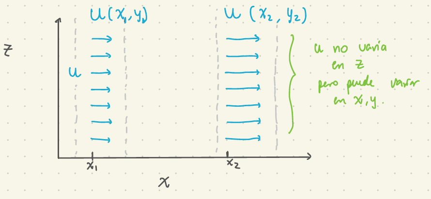
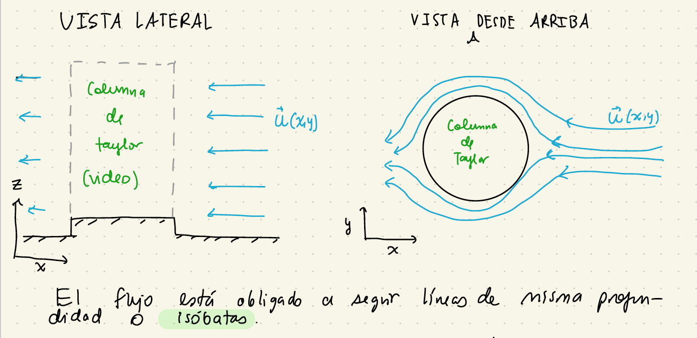
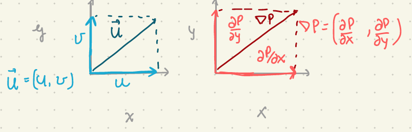
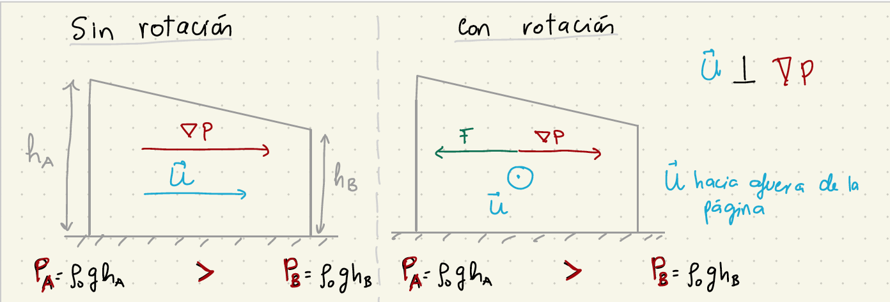
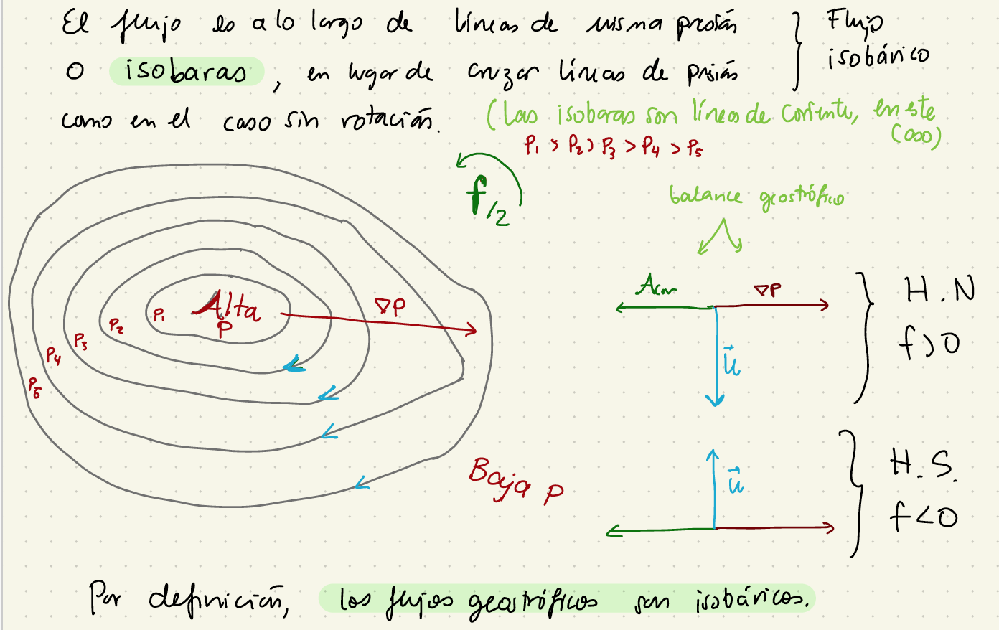
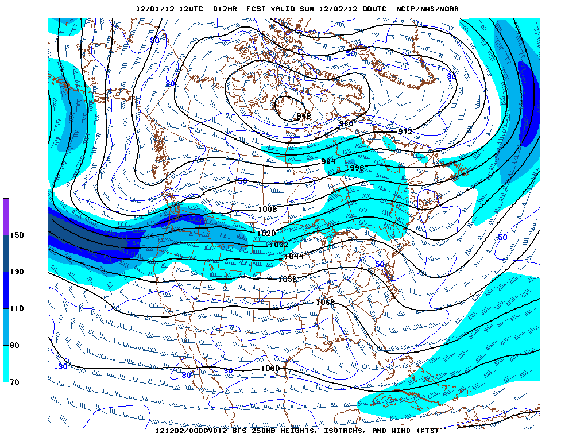
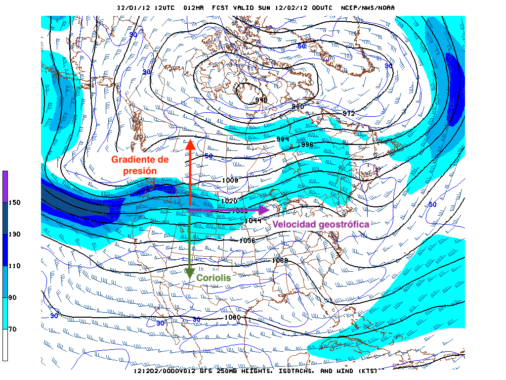

class: center, middle <br/><br/> .title[8 Geostrofía] .subtitle[Módulo 3: Dinámica de la Atmósfera] <br/><br/> .author[Diplomado en Meteorología y Climatología] .institution[ICAyCC] <br/> .date[13 de marzo de 2024] <br/><br/> <img style="width:100%" src="./figures/green_waves.png"> <!-- .note[Created with [{Liminal}](https://github.com/jonathanlilly/liminal) using [{Remark.js}](http://remarkjs.com/) + [{Markdown}](https://github.com/adam-p/markdown-here/wiki/Markdown-Cheatsheet) + [{KaTeX}](https://katex.org)] --> --- name: toc class: left <img style="width:50%" src="./figures/ink.jpg"> #Contenido 1. [Ecuaciones que describen a los flujos geostróficos](#geostrofico) 2. [Teorema de Taylor-Proudman](#taylor) 3. [Ejemplos](#ejemplos) <!-- Comment out the next slide if you don't want the Table of Contents link --> --- layout: true .toc[[✧](#toc)] --- class: left ## Repaso --- class: left **1. ¿En qué consiste la aproximación de Boussinesq?** a) En decir que la densidad no depende de la salinidad, ni de la humedad relativa. b) En decir que el término de Coriolis en las ecuaciones de momento es del orden del término del gradiente de presión. c) En asumir que la densidad no varía mucho de un valor promedio o de referencia. d) En asumir que las velocidades verticales son mucho más pequeñas que las horizontales. -- **respuesta: c** --- name: geostroficos class: left ## Balance geostrófico </br></br> Consideremos flujos homogéneos (variaciones de densidad $\rho=0$) en donde la aceleración de Coriolis domina sobre otros términos de aceleración y en donde los efectos de fricción son despreciables: </br></br> $$Ro_T<<1, \; Ro<<1, \; Ek <<1$$. --- class: left ## ¿Qué implica para las ecuaciones primitivas? 2-3. Momento horizontal: $$\cancel{\frac{Du}{Dt}}-fv=-\frac{1}{\rho\_0}\frac{\partial P}{\partial x}+\cancel{\mathcal{A}\left(\frac{\partial^2 u}{\partial x^2}+\frac{\partial^2 u}{\partial y^2}\right)} + \cancel{\nu\_E\frac{\partial^2 u}{\partial z^2}}$$ $$\cancel{\frac{Dv}{Dt}}+fu=-\frac{1}{\rho\_0}\frac{\partial P}{\partial y}+\cancel{\mathcal{A}\left(\frac{\partial^2 v}{\partial x^2}+\frac{\partial^2 v}{\partial y^2}\right)} + \cancel{\nu\_E\frac{\partial^2 v}{\partial z^2}}$$ </br></br> El balance de fuerzas es entre Coriolis y el gradiente horizontal de presión. --- class: left ## Balance geostrófico Las ecuaciones que gobiernan a este flujo en rotación, homogéneo e inviscido son: Momento: $$-fv=-\frac{1}{\rho_0}\frac{\partial p}{\partial x}$$ $$fu=-\frac{1}{\rho_0}\frac{\partial p}{\partial y}$$ $$0=-\frac{1}{\rho_0}\frac{\partial p}{\partial z}$$ Continuidad: $$\frac{\partial u}{\partial x}+\frac{\partial v}{\partial y}+\frac{\partial w}{\partial z}=0$$ --- name:taylor class: left ## Teorema de Taylor-Proudman .caption[(Taylor 1923, Proudman 1953)] Estos flujos tienen muchas propiedades intersantes. Si derivamos la ecuación en $x$ (o la de $y$) respecto a $z$ y usamos que $\partial p/\partial z=0$ llegamos a: $$\frac{\partial u}{\partial z} = \frac{\partial v}{\partial z} = 0$$ </br></br> **¡La velocidad horizontal no cambia a lo largo de la columna de fluido! ** --- class: left Las partículas de una columna de fluido se mueven juntas. Esta rigidez vertical se conoce como **Columnas de Taylor** y es una propiedad fundamental de los fluidos en rotación. .center[  ] --- name: rotacion class: left ## Visualización de Columnas de Taylor <iframe width="560" height="315" src="https://www.youtube.com/embed/7GGfsW7gOLI" title="YouTube video player" frameborder="0" allow="accelerometer; autoplay; clipboard-write; encrypted-media; gyroscope; picture-in-picture" allowfullscreen></iframe> .caption[Video: Record Player Fluid Dynamics: A Taylor Column Experiment por [UCLA spinlab](https://spinlab.ess.ucla.edu/)] --- class: left ## Columnas de Taylor Si el flujo no estuviera en un sistema de referencia que rota, esperaríamos que la tinta pasara tanto sobre el obstáculo como alrededor del obstáculo. La rotación genera estructuras verticales en el flujo o "columnas" que siguen líneas de misma profundidad (isóbatas), por lo que la columna de fluido con tinta es forzada a rodear el obstáculo para no cambiar de profundidad. --- .center[  ] No lo derivamos aqui pero cuando el fondo no es plano encontramos que como la velocidad vertical $w$ es independiente de la profundidad y más aún, es cero en superficie, $w$ no puede tener un valor distinto en profundidad por lo que no puede trepar por el fondo y el flujo queda confinado a seguir líneas de misma profundidad o **isobatas**. --- class:left ### Velocidades geostróficas Ahora resolvamos las ecuaciones de momento horizontal para encontrar las velocidades (geostróficas): $$u=-\frac{1}{\rho_0 f}\frac{\partial P}{\partial y},$$ $$v=\frac{1}{\rho_0 f}\frac{\partial P}{\partial x}.$$ </br> El vector velocidad es **perpendicular** a la fuerza debida al gradiente de presión. </br> .center[  ] --- class: left ## Diferencia entre flujo en rotación y flujo sin rotación .center[  ] </br> En el flujo geostrófico (con rotación), la fuerza de Coriolis balancea a la fuerza debida al gradiente de presión y la velocidad geostrófica es hacia afuera de la página. </br> En el caso sin rotación, el fluido simplemente se mueve hacia donde apunta la fuerza debida al gradiente de presión. --- ## El flujo geostrófico se mueve a lo largo de isobaras .center[  ] En el **hemisferio norte** ($f>0$) con **alta presión** a la **derecha** y en el **hemisferio sur** ($f<0$) con la alta presión a la **izquierda**. --- name: ejemplos ## Ejemplo .center[  ] .caption[Las líneas negras son similares a isobaras, el número de rayitas en las barbas es proporcional a la magnitud del viento y apuntan como flechas hacia donde va el viento (las rayitas son como las plumas de la flecha). Imagen de [Memphis Weather Blog](https://www.memphisweather.blog/2012/12/meteorological-winter-ushered-in-by.html).] --- .center[  ] Las barbas se alinean con las isobaras y apuntan en dirección tal que la alta presión queda a su derecha. --- ## Otro ejercicio 1. Haz un esquema indicando las direcciones de la velocidad geostrófica, fuerza debida al gradiente de presión y fuerza de Coriolis para un sistema de baja presión frente a las costas de Chile. --- ## Referencias: Cushman-Roisin y Beckers - Capítulo 7 </br></br></br></br></br></br></br></br> .note[Notas creadas con [{Liminal}](https://github.com/jonathanlilly/liminal) usando [{Remark.js}](http://remarkjs.com/) + [{Markdown}](https://github.com/adam-p/markdown-here/wiki/Markdown-Cheatsheet) + [{KaTeX}](https://katex.org)]